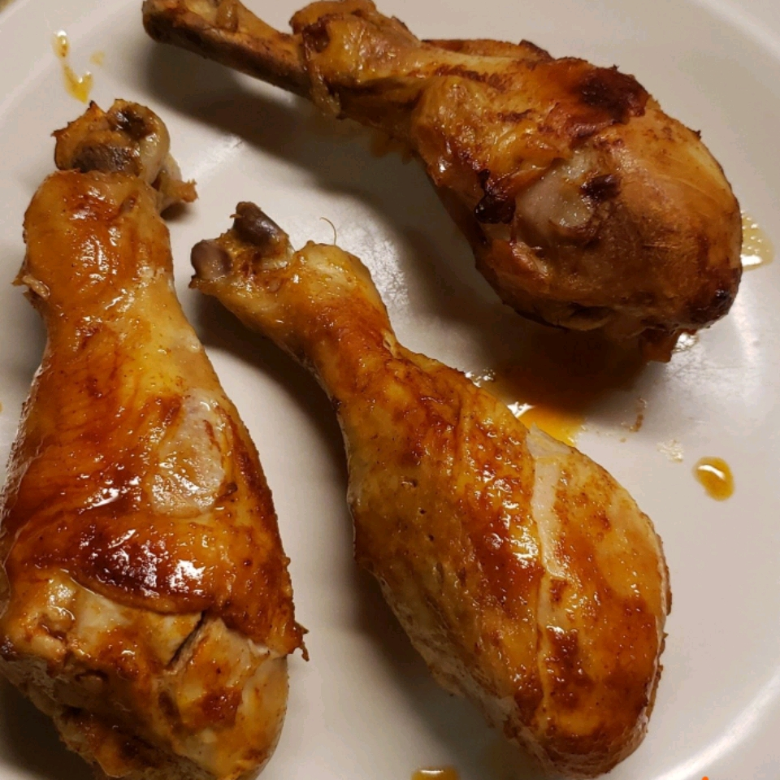

Spicy Chicken Recipe

Description
This is just like spicy chicken wings, only less work.
Cooks up nicely in the slow cooker!
A quick meal that is super easy and oh so yummy!
For crispier chicken, bake in a 400 degrees F oven for the final 30 minutes.
Ingredients
- 12 chicken drumsticks
- 1 (5 ounce) bottle hot red pepper sauce
- 1/4 cup butter, cubed
- 1/2 teaspoon garlic powder
- 1/2 teaspoon onion powder
- Salt and pepper to taste
- 1 1/2 cups blue cheese salad dressing
Steps
- Place the drumsticks in a slow cooker, and sprinkle evenly with pieces of butter
- Pour the hot sauce over the chicken
- Season with garlic powder, onion powder, salt and pepper
- Cover, and cook on High for 3 hours, or until tender
- Serve chicken legs with blue cheese dressing on the side